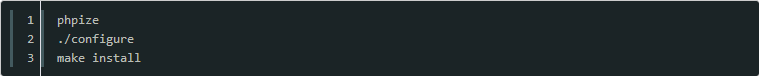

swoole是一个PHP的异步、并行、高性能网络通信引擎，使用纯C语言编写，提供了PHP语言的异步多线程服务器，异步TCP/UDP网络客户端，异步MySQL，异步Redis，数据库连接池，AsyncTask，消息队列，毫秒定时器，异步文件读写，异步DNS查询。
Swoole内置了Http/WebSocket服务器端/客户端、Http2.0服务器端。
到GitHub首页下载Swoole扩展源码，地址：https://github.com/swoole/swoole-src 下载后按照标准的PHP扩展编译方式进行编译和安装。
一般是

编译安装完后，修改php.ini加入extension=swoole.so开启swoole扩展。也可以通过dl('swoole.so')动态载入，推荐修改php.ini。
下载swoole_framework源码，地址：https://github.com/swoole/framework。放置到您的workspace目录中即可。
swoole_framework是PHP代码，只需要require/include即可，无需编译和安装。
配置 ./configure 如上 你的环境又多个php环境时要找现在环境正用你的
然后修改php.ini文件，添加 extension=swoole.so
用phpinfo() 测试是否有swoole的扩展
以上是文章全部内容，有需要学习交流的友人请加入交流群的咱们一起，有问题一起交流，一起进步！前提是你是学技术的。感谢阅读！